Mutagénicité et cancérogénicité
Une mutation est une altération de l'ADN. Le cancer suit trois phases : initiation, promotion, propagation. Le CIRC classe les cancérogènes en quatre groupes (1, 2A, 2B, 3). Le RSST utilise C1/C2/C3. Pour les cancérogènes génotoxiques, on suppose qu'il n'y a pas de seuil sécuritaire. En mine, plusieurs CIRC 1 sont présents : silice cristalline, Amiante (bâtiments anciens), DPM, radon (souterrain), arsenic (gisements d'or).
Table des matières
- Mutation et mutagénicité
- Carcinogenèse en 3 phases
- Classifications des cancérogènes
- Cancérogènes professionnels emblématiques
- Toxicité pour la reproduction
- Application terrain
- Ressources
Mutation et mutagénicité
Mutation = changement permanent dans l'ADN. Un agent mutagène induit ce changement (chimique ou physique, par exemple radiations ionisantes).
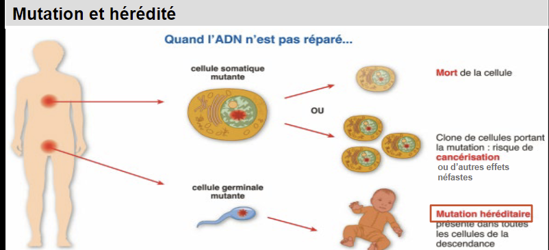
Toucher l'image pour l'agrandirCellules touchées
| Type cellulaire | Conséquence | Catégorie SGH |
|---|---|---|
| Somatique | Effet limité à l'individu (cancers, vieillissement) | Considérée dans la classification mais non transmissible |
| Germinale (gamètes) | Transmissible à la descendance | Classes de mutagénicité sur cellules germinales |
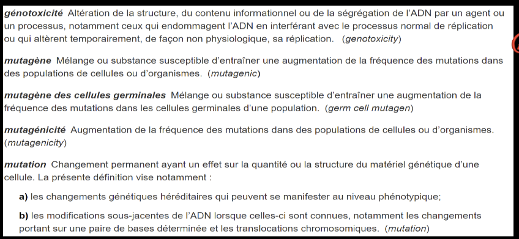
Toucher l'image pour l'agrandirCatégories SGH mutagénicité germinale
- 1A : effet héréditaire avéré chez l'humain.
- 1B : à considérer comme induisant des mutations héréditaires.
- 2 : substances préoccupantes, induction soupçonnée.
Exemples : acrylamide (clastogène, métabolite glycidamide), isocyanurate de triglycidyle.
Toutes les mutations ne mènent pas à un cancer : réparation de l'ADN, apoptose, mutations silencieuses.
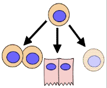
Toucher l'image pour l'agrandirCarcinogenèse en 3 phases
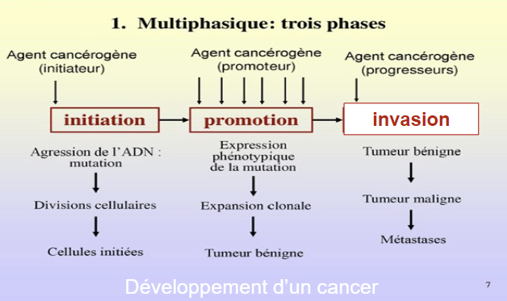
Toucher l'image pour l'agrandirPhase 1 : Initiation
- Mutation génotoxique irréversible de l'ADN d'une cellule.
- Causée par un agent initiateur (cancérogène génotoxique).
- Modifications : adduits ADN, cassures, échanges chromatides.
- Activation métabolique parfois nécessaire (le benzo(a)pyrène devient un époxyde réactif par CYP450).
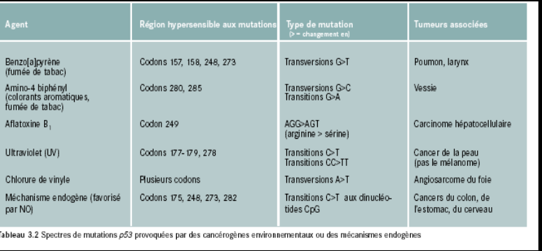
Toucher l'image pour l'agrandirPhase 2 : Promotion
- Processus non génotoxique, réversible.
- Multiplication cellulaire excessive sous l'effet d'un promoteur (hormones, irritation chronique, esters de phorbol, tétrachlorure de carbone).
- Les promoteurs seuls ne causent pas le cancer ; ils amplifient les défauts existants.
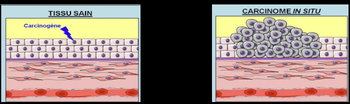
Toucher l'image pour l'agrandirPhase 3 : Propagation (progression)
- Croissance autonome de la tumeur.
- Angiogenèse : néovascularisation induite par la tumeur.
- Métastases : dissémination via sang et lymphatique.
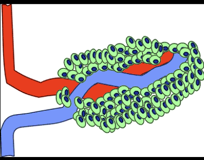
Toucher l'image pour l'agrandir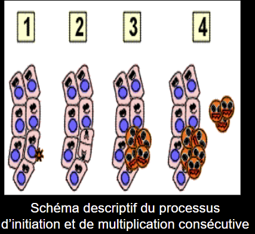
Toucher l'image pour l'agrandirGènes impliqués : proto-oncogènes (activation → croissance incontrôlée) et gènes suppresseurs de tumeurs (inactivation → perte de contrôle, par exemple p53).
Classifications des cancérogènes
La répartition des facteurs de risque du cancer en population générale met en perspective la part des expositions professionnelles dans le fardeau global.
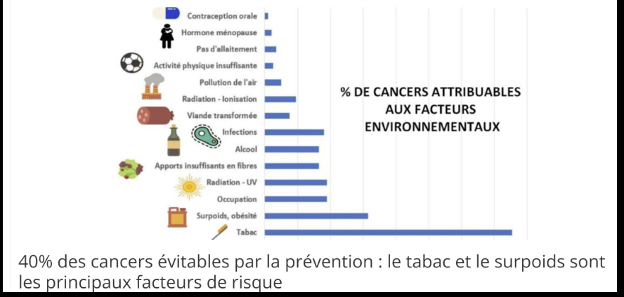
Toucher l'image pour l'agrandirCIRC (IARC)
| Groupe | Signification |
|---|---|
| 1 | Cancérogène avéré pour l'humain |
| 2A | Probablement cancérogène pour l'humain |
| 2B | Peut-être cancérogène pour l'humain |
| 3 | Non classifiable |
(Le groupe 4 « probablement non cancérogène » a été supprimé en 2019.)
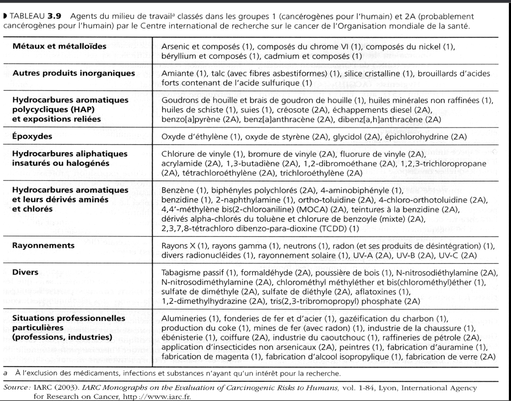
Toucher l'image pour l'agrandirRSST (annexe I, Québec)
| Classe | Signification |
|---|---|
| C1 | Effet cancérogène démontré chez l'humain |
| C2 | Effet cancérogène soupçonné chez l'humain |
| C3 | Effet démontré chez l'animal, résultats non nécessairement transposables |
Articles 30 et 32 RSST encadrent la substitution et la réduction à la valeur la plus basse possible pour les C1 et C2.
ACGIH
A1 (confirmé humain), A2 (suspect humain), A3 (animal, non transposable), A4 (non classifiable), A5 (probablement pas cancérogène).
Cancérogènes professionnels emblématiques
| Agent | CIRC | Cancer-cible | Source |
|---|---|---|---|
| Amiante (toutes formes) | 1 | Poumon, mésothéliome, larynx, ovaire | Amiante |
| Programme de prévention silice cristalline | 1 | Poumon | Forage, concassage, sablage |
| Arsenic et composés inorganiques | 1 | Peau, poumon, vessie | Mines d'or (arsénopyrite), métallurgie |
| Benzène | 1 | Leucémie myéloïde | Solvants |
| Chrome VI | 1 | Poumon, sinus | Soudage inox, chromage, ciment |
| Nickel (composés) | 1 | Poumon, nasopharynx | Affinage, soudage inox |
| Cadmium | 1 | Poumon | Soudage, batteries, pigments |
| Béryllium | 1 | Poumon (bérylliose chronique aussi) | Alliages aérospatiale |
| Formaldéhyde | 1 | Nasopharynx, leucémie | Résines, anatomopathologie |
| Radon | 1 | Poumon | Mines souterraines (granite, uranifères) |
| Hydrocarbures aromatiques polycycliques | 1-2A | Peau, poumon, vessie | Fumées, huiles, asphalte, coke |
| Émissions diesel (DPM) | 1 | Poumon | Mines, transport |
| Chlorure de vinyle | 1 | Angiosarcome du foie | PVC |
| Bois (poussière) | 1 | Sinus | Ébénisterie |
| Rayonnements ionisants et non ionisants UV solaire | 1 | Peau | Travail extérieur |
Toxicité pour la reproduction
Cibles : système reproducteur masculin (spermatogenèse), féminin (ovocytes, ovaires), placenta, fœtus, allaitement.
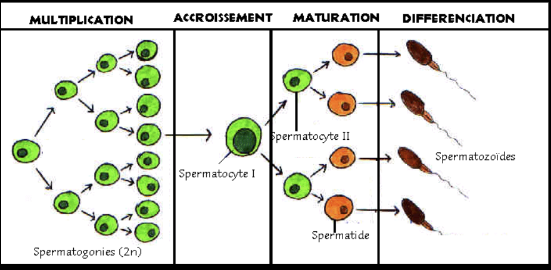
Toucher l'image pour l'agrandir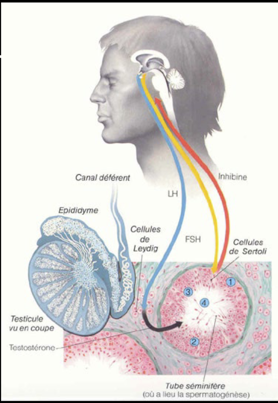
Toucher l'image pour l'agrandir| Effet | Exemples |
|---|---|
| Spermatogenèse perturbée | Plomb, cadmium, dibromochloropropane (DBCP, retiré), chaleur |
| Ovocytes/ovaires | Solvants, radiations |
| Tératogenèse (malformations) | Thalidomide (historique), méthylmercure (Minamata), syndrome d'alcoolisation fœtale |
| Allaitement | DDT, dioxines, Pb, Hg accumulés dans le tissu adipeux et le sang |
Catégories SGH reproduction : 1A (avéré humain), 1B (présomption forte), 2 (suspect), additionnel pour effets sur l'allaitement.
Application terrain
Le milieu minier concentre plusieurs cancérogènes CIRC 1 dans un même environnement de travail, ce qui justifie une vigilance particulière.
| Cancérogène CIRC 1 | Source minière typique | Cancer-cible | Mesure prioritaire |
|---|---|---|---|
| Programme de prévention silice cristalline | Forage à sec, concassage, sablage | Poumon (silicose en parallèle) | Forage humide, captage à la source |
| Diesel (DPM) | Engins souterrains | Poumon | Électrification, post-traitement, ventilation |
| Amiante | Calorifuges et joints d'équipements anciens | Poumon, mésothéliome | Inventaire, retrait planifié |
| Radon | Mines souterraines profondes | Poumon | Ventilation, dosimétrie radon |
| Arsenic | Gisements d'or avec arsénopyrite | Peau, poumon, vessie | Captage usine, EPI, IBE urinaire |
| Chrome VI | Ciment béton projeté, soudage inox | Poumon | Substitution Cr (III), captage local |
| Nickel | Soudage inox, raffinage | Poumon, nasopharynx | Captage, P100, surveillance médicale |
| Benzène | Carburants, solvants atelier | Leucémie myéloïde | Substitution, ventilation |
| HAP | Diesel, huiles usées, asphalte | Peau, poumon, vessie | Gants, hygiène cutanée |
La latence (10-40 ans) impose un registre d'exposition par travailleur conservé sur toute la durée de carrière + 40 ans, pour soutenir d'éventuelles réclamations LATMP et MADO.
Ressources
| Document | Type | Source |
|---|---|---|
| Liste CIRC (monographies) | Référentiel | IARC, OMS |
| Annexe I RSST (notations C1/C2/C3, R, S) | Règlement | LégisQuébec |
| Registre d'exposition aux cancérogènes par travailleur | Registre interne | À maintenir 40 ans |
| Programme de surveillance médicale cancérogènes | Programme | Médecin désigné CNESST, rôles et pouvoirs |
Articles wiki connexes
- Toxicité, dose-réponse et DL50
- SIMDUT et classes de danger
- Toxicité du système respiratoire
- Métaux toxiques en milieu de travail
- Amiante
- Solvants
- Maladies professionnelles en mine
[[Wiki SST/00 - Accueil/�
Pages qui pointent ici (6)
- Hépatotoxicité et néphrotoxicité Toxicologie
- Introduction à la toxicologie industrielle Toxicologie
- Neurotoxicité, hématotoxicité et toxicité endocrinienne Toxicologie
- Toxicité du système respiratoire Toxicologie
- Toxicité, dose-réponse et DL50 Toxicologie
- Toxicologie clinique Toxicologie